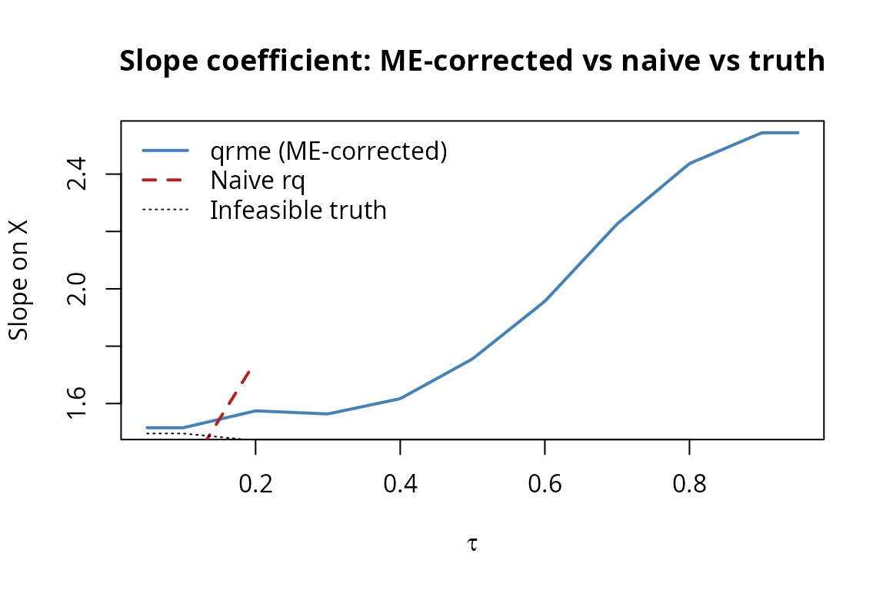

Introduction to qrme: Quantile Regression with Measurement Error
Brantly Callaway, Tong Li, Irina Murtazashvili, Emmanuel S. Tsyawo
2026-05-18
Source:vignettes/qrme-intro.Rmd
qrme-intro.RmdOverview
The qrme package estimates quantile regression (QR)
models when the dependent variable is measured with error. Classical QR
applied to noisy outcomes produces biased estimates of the conditional
quantile function of the true (latent) outcome. qrme()
corrects this bias via a pseudo-EM algorithm that alternates between
- E-step — drawing latent true outcomes given the observed noisy outcome and current QR parameters, using Metropolis–Hastings MCMC; and
- M-step — re-fitting quantile regressions on the augmented data.
For the case where both the outcome and a continuous
treatment variable are measured with error, see
vignette("tsme-application"), which describes
tsme().
A simulated example
Data-generating process
We use a location-scale DGP where the true outcome depends on a uniform covariate :
The observed outcome is , where with .
library(qrme)
library(quantreg)
#> Loading required package: SparseM
n <- 400
tau <- seq(0.10, 0.90, by = 0.10)
# true coefficient functions
b0 <- function(u) 1 + 3 * u - u^2
b1 <- function(u) exp(u)
X <- runif(n)
U <- runif(n)
Ystar <- b0(U) + b1(U) * X # latent outcome
V <- rnorm(n, sd = 0.5) # measurement error
Y <- Ystar + V # observed (noisy) outcome
dd <- data.frame(Y = Y, Ystar = Ystar, X = X)Naive QR ignoring measurement error
Standard rq() applied to the noisy outcome is
inconsistent for the QR coefficients of
.
fit_naive <- rq(Ystar ~ X, tau = tau, data = dd) # infeasible truth
fit_noisy <- rq(Y ~ X, tau = tau, data = dd) # naive, ignores ME
# slope coefficients at each tau
rbind(
truth = coef(fit_naive)["X", ],
noisy = coef(fit_noisy)["X", ]
)
#> tau= 0.1 tau= 0.2 tau= 0.3 tau= 0.4 tau= 0.5 tau= 0.6 tau= 0.7 tau= 0.8
#> truth 1.351121 1.471110 1.484967 1.407494 1.935130 1.869018 2.020751 2.359464
#> noisy 1.609179 1.747803 1.682019 1.641558 1.881682 1.692509 1.768411 2.266146
#> tau= 0.9
#> truth 2.565987
#> noisy 2.525466The naive estimates are systematically attenuated relative to the truth because additive ME compresses the conditional distribution.
ME-corrected QR with qrme()
qrme() takes a standard formula interface. Key
arguments:
| Argument | Default | Purpose |
|---|---|---|
tau |
0.5 |
quantile(s) to estimate |
n_mix |
1 |
number of Gaussian components for ME distribution |
me_distribution |
"gaussian" |
"gaussian" or "laplace"
|
mcmc_draws |
200 |
MCMC draws per E-step |
mcmc_burn_in |
100 |
burn-in draws (discarded) |
tol |
0.01 |
convergence tolerance |
max_em_iters |
100 |
maximum EM iterations |
se |
FALSE |
compute bootstrap standard errors? |
n_boot |
100 |
bootstrap replications (if se = TRUE) |
fit_me <- qrme(
formula = Y ~ X,
data = dd,
tau = tau,
n_mix = 1L,
mcmc_draws = 150L,
mcmc_burn_in = 75L,
tol = 1e-2,
max_em_iters = 30L,
se = FALSE,
verbose = FALSE
)
#> Warning in rq.fit.pfn(wx, wy, tau = tau, ...): Too many fixups: doubling m
#> Warning in rq.fit.pfn(wx, wy, tau = tau, ...): Too many fixups: doubling m
#> Warning in rq.fit.pfn(wx, wy, tau = tau, ...): Too many fixups: doubling m
#> Warning in rq.fit.pfn(wx, wy, tau = tau, ...): Too many fixups: doubling m
#> Warning in rq.fit.pfn(wx, wy, tau = tau, ...): Too many fixups: doubling m
#> Warning in rq.fit.pfn(wx, wy, tau = tau, ...): Too many fixups: doubling m
#> Warning in rq.fit.pfn(wx, wy, tau = tau, ...): Too many fixups: doubling m
#> Warning in rq.fit.pfn(wx, wy, tau = tau, ...): Too many fixups: doubling m
#> Warning in rq.fit.pfn(wx, wy, tau = tau, ...): Too many fixups: doubling m
#> Warning in rq.fit.pfn(wx, wy, tau = tau, ...): Too many fixups: doubling m
#> Warning in rq.fit.pfn(wx, wy, tau = tau, ...): Too many fixups: doubling m
#> Warning in rq.fit.pfn(wx, wy, tau = tau, ...): Too many fixups: doubling m
#> Warning in rq.fit.pfn(wx, wy, tau = tau, ...): Too many fixups: doubling m
#> Warning in rq.fit.pfn(wx, wy, tau = tau, ...): Too many fixups: doubling m
#> Warning in rq.fit.pfn(wx, wy, tau = tau, ...): Too many fixups: doubling m
#> Warning in rq.fit.pfn(wx, wy, tau = tau, ...): Too many fixups: doubling m
#> Warning in rq.fit.pfn(wx, wy, tau = tau, ...): Too many fixups: doubling m
#> Warning in rq.fit.pfn(wx, wy, tau = tau, ...): Too many fixups: doubling m
#> Warning in rq.fit.pfn(wx, wy, tau = tau, ...): Too many fixups: doubling m
#> Warning in rq.fit.pfn(wx, wy, tau = tau, ...): Too many fixups: doubling m
#> Warning in rq.fit.pfn(wx, wy, tau = tau, ...): Too many fixups: doubling m
#> Warning in rq.fit.pfn(wx, wy, tau = tau, ...): Too many fixups: doubling mThe result is an object of class merr. Printing it shows
the estimated measurement error distribution:
print(fit_me)
#> Measurement error: gaussian
#> Pi Mu Sigma
#> 1 0 0.6107Coefficient estimates
The QR coefficient matrix lives in fit_me$bet. Rows
correspond to tau values; columns to regression
coefficients (intercept first).
# intercept and slope at each quantile
colnames(fit_me$bet) <- c("intercept", "slope_X")
round(fit_me$bet, 3)
#> intercept slope_X
#> tau= 0.1 1.556 1.516
#> tau= 0.2 1.647 1.575
#> tau= 0.3 1.814 1.564
#> tau= 0.4 2.017 1.617
#> tau= 0.5 2.206 1.756
#> tau= 0.6 2.319 1.956
#> tau= 0.7 2.395 2.226
#> tau= 0.8 2.454 2.437
#> tau= 0.9 2.519 2.544Use betfun() to get a smooth interpolating function over
the unit interval, which is useful for plotting the full quantile
process:
bf <- betfun(fit_me$bet, tau)
tau_g <- seq(0.05, 0.95, length.out = 200)
# betfun returns a function over scalar tau; sapply to vectorise
slope_me <- sapply(tau_g, function(u) bf(u)[2])
bf_noisy <- betfun(coef(fit_noisy), tau)
slope_noisy <- sapply(tau_g, function(u) bf_noisy(u)[2])
bf_truth <- betfun(coef(fit_naive), tau)
slope_truth <- sapply(tau_g, function(u) bf_truth(u)[2])
plot(
tau_g, slope_me,
type = "l", lwd = 2, col = "steelblue",
xlab = expression(tau), ylab = "Slope on X",
main = "Slope coefficient: ME-corrected vs naive vs truth"
)
lines(tau_g, slope_noisy, col = "firebrick", lwd = 2, lty = 2)
lines(tau_g, slope_truth, col = "black", lwd = 1, lty = 3)
legend("topleft",
legend = c("qrme (ME-corrected)", "Naive rq", "Infeasible truth"),
col = c("steelblue", "firebrick", "black"),
lty = c(1, 2, 3), lwd = c(2, 2, 1), bty = "n"
)
The ME-corrected estimates track the truth substantially better than the naive estimates, especially at extreme quantiles.
Recovering the measurement error distribution
The EM algorithm simultaneously estimates the ME distribution. With a
single-component Gaussian specification (n_mix = 1), the
estimated parameters are:
Finite Gaussian mixtures (n_mix > 1)
For more flexible ME distributions, increase n_mix. With
n_mix = 2 the EM fits a two-component mixture:
fit_m2 <- qrme(
formula = Y ~ X,
data = dd,
tau = tau,
n_mix = 2L,
mcmc_draws = 150L,
mcmc_burn_in = 75L,
tol = 1e-2,
max_em_iters = 30L,
se = FALSE,
verbose = FALSE
)
#> Warning in rq.fit.pfn(wx, wy, tau = tau, ...): Too many fixups: doubling m
#> Warning in rq.fit.pfn(wx, wy, tau = tau, ...): Too many fixups: doubling m
#> Warning in rq.fit.pfn(wx, wy, tau = tau, ...): Too many fixups: doubling m
#> Warning in rq.fit.pfn(wx, wy, tau = tau, ...): Too many fixups: doubling m
#> Warning in rq.fit.pfn(wx, wy, tau = tau, ...): Too many fixups: doubling m
#> Warning in rq.fit.pfn(wx, wy, tau = tau, ...): Too many fixups: doubling m
#> Warning in rq.fit.pfn(wx, wy, tau = tau, ...): Too many fixups: doubling m
#> Warning in rq.fit.pfn(wx, wy, tau = tau, ...): Too many fixups: doubling m
#> Warning in rq.fit.pfn(wx, wy, tau = tau, ...): Too many fixups: doubling m
#> Warning in rq.fit.pfn(wx, wy, tau = tau, ...): Too many fixups: doubling m
#> Warning in rq.fit.pfn(wx, wy, tau = tau, ...): Too many fixups: doubling m
#> Warning in rq.fit.pfn(wx, wy, tau = tau, ...): Too many fixups: doubling m
#> Warning in rq.fit.pfn(wx, wy, tau = tau, ...): Too many fixups: doubling m
#> Warning in rq.fit.pfn(wx, wy, tau = tau, ...): Too many fixups: doubling m
#> Warning in rq.fit.pfn(wx, wy, tau = tau, ...): Too many fixups: doubling m
#> Warning in rq.fit.pfn(wx, wy, tau = tau, ...): Too many fixups: doubling m
#> Warning in rq.fit.pfn(wx, wy, tau = tau, ...): Too many fixups: doubling m
#> Warning in rq.fit.pfn(wx, wy, tau = tau, ...): Too many fixups: doubling m
#> Warning in rq.fit.pfn(wx, wy, tau = tau, ...): Too many fixups: doubling m
#> Warning in rq.fit.pfn(wx, wy, tau = tau, ...): Too many fixups: doubling m
#> Warning in rq.fit.pfn(wx, wy, tau = tau, ...): Too many fixups: doubling m
#> Warning in rq.fit.pfn(wx, wy, tau = tau, ...): Too many fixups: doubling m
#> Warning in rq.fit.pfn(wx, wy, tau = tau, ...): Too many fixups: doubling m
#> Warning in rq.fit.pfn(wx, wy, tau = tau, ...): Too many fixups: doubling m
#> Warning in rq.fit.pfn(wx, wy, tau = tau, ...): Too many fixups: doubling m
#> Warning in rq.fit.pfn(wx, wy, tau = tau, ...): Too many fixups: doubling m
#> Warning in rq.fit.pfn(wx, wy, tau = tau, ...): Too many fixups: doubling m
#> Warning in rq.fit.pfn(wx, wy, tau = tau, ...): Too many fixups: doubling m
#> Warning in rq.fit.pfn(wx, wy, tau = tau, ...): Too many fixups: doubling m
#> Warning in rq.fit.pfn(wx, wy, tau = tau, ...): Too many fixups: doubling m
#> Warning in rq.fit.pfn(wx, wy, tau = tau, ...): Too many fixups: doubling m
#> Warning in rq.fit.pfn(wx, wy, tau = tau, ...): Too many fixups: doubling m
#> Warning in rq.fit.pfn(wx, wy, tau = tau, ...): Too many fixups: doubling m
#> Warning in rq.fit.pfn(wx, wy, tau = tau, ...): Too many fixups: doubling m
#> Warning in rq.fit.pfn(wx, wy, tau = tau, ...): Too many fixups: doubling m
#> Warning in rq.fit.pfn(wx, wy, tau = tau, ...): Too many fixups: doubling m
#> Warning in rq.fit.pfn(wx, wy, tau = tau, ...): Too many fixups: doubling m
#> Warning in rq.fit.pfn(wx, wy, tau = tau, ...): Too many fixups: doubling m
#> Warning in rq.fit.pfn(wx, wy, tau = tau, ...): Too many fixups: doubling m
#> Warning in rq.fit.pfn(wx, wy, tau = tau, ...): Too many fixups: doubling m
#> Warning in rq.fit.pfn(wx, wy, tau = tau, ...): Too many fixups: doubling m
#> Warning in rq.fit.pfn(wx, wy, tau = tau, ...): Too many fixups: doubling m
#> Warning in rq.fit.pfn(wx, wy, tau = tau, ...): Too many fixups: doubling m
#> Warning in rq.fit.pfn(wx, wy, tau = tau, ...): Too many fixups: doubling m
#> Warning in rq.fit.pfn(wx, wy, tau = tau, ...): Too many fixups: doubling m
#> Warning in rq.fit.pfn(wx, wy, tau = tau, ...): Too many fixups: doubling m
#> Warning in rq.fit.pfn(wx, wy, tau = tau, ...): Too many fixups: doubling m
#> Warning in rq.fit.pfn(wx, wy, tau = tau, ...): Too many fixups: doubling m
#> Warning in rq.fit.pfn(wx, wy, tau = tau, ...): Too many fixups: doubling m
#> Warning in rq.fit.pfn(wx, wy, tau = tau, ...): Too many fixups: doubling m
#> Warning in rq.fit.pfn(wx, wy, tau = tau, ...): Too many fixups: doubling m
#> Warning in rq.fit.pfn(wx, wy, tau = tau, ...): Too many fixups: doubling m
#> Warning in rq.fit.pfn(wx, wy, tau = tau, ...): Too many fixups: doubling m
#> Warning in rq.fit.pfn(wx, wy, tau = tau, ...): Too many fixups: doubling m
#> Warning in rq.fit.pfn(wx, wy, tau = tau, ...): Too many fixups: doubling m
#> Warning in rq.fit.pfn(wx, wy, tau = tau, ...): Too many fixups: doubling m
#> Warning in rq.fit.pfn(wx, wy, tau = tau, ...): Too many fixups: doubling m
#> Warning in rq.fit.pfn(wx, wy, tau = tau, ...): Too many fixups: doubling m
#> Warning in rq.fit.pfn(wx, wy, tau = tau, ...): Too many fixups: doubling m
#> Warning in rq.fit.pfn(wx, wy, tau = tau, ...): Too many fixups: doubling m
#> Warning in rq.fit.pfn(wx, wy, tau = tau, ...): Too many fixups: doubling m
#> Warning in rq.fit.pfn(wx, wy, tau = tau, ...): Too many fixups: doubling m
#> Warning in rq.fit.pfn(wx, wy, tau = tau, ...): Too many fixups: doubling m
#> Warning: EM algorithm failed to converge after 30 iterations
print(fit_m2)
#> Measurement error: gaussian (n_mix = 2)
#> Pi Mu Sigma
#> Comp.1 0.5301 -0.5906 0.4842
#> Comp.2 0.4699 0.6664 0.3234Model selection between mixture orders can be done via
AIC() / BIC(), which call the
logLik.merr() S3 method:
Bootstrap standard errors
Set se = TRUE and choose n_boot to obtain
percentile bootstrap SEs. This adds $bet.se,
$sig.se, $mu.se, and $pi.se to
the returned object. Bootstrap is omitted here because it is slow; a
typical call looks like:
Multi-start estimation
The EM algorithm is not globally convergent and can settle at local
optima. qrme_start_search() runs the estimator from
multiple random starting values and returns the best fit by
log-likelihood:
best <- qrme_start_search(
formula = Y ~ X,
data = dd,
tau = tau,
n_starts = 10,
sigma_range = c(0.05, 1.5),
n_mix = 1L,
mcmc_draws = 200L
)Summary
qrme() provides a straightforward interface for
ME-corrected quantile regression. The workflow is:
- Specify the model with a formula and choose
tau. - Choose the ME distribution (
n_mix,me_distribution). - Tune the MCMC (
mcmc_draws,mcmc_burn_in,proposal_sd) and EM (tol,max_em_iters) settings. - Optionally add bootstrap SEs (
se = TRUE). - Use
betfun()for smooth coefficient curves andAIC()/BIC()for mixture-order selection.
For the two-sided ME extension (ME in both the outcome and a
continuous treatment) see vignette("tsme-application").